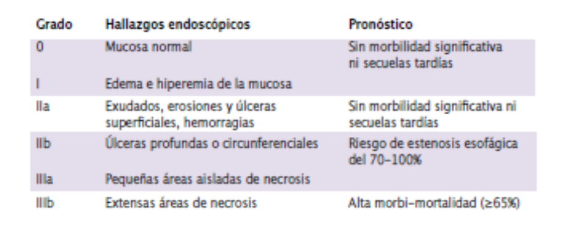

<div class="pages">
  <div data-page="projects" class="page no-toolbar no-navbar">
    <div class="page-content">
    
     <div class="navbarpages">
       <div class="navbar_home_link"><a href="toogle.html"></a></div>
       <div class="navbar_page_center"><b>Especialidades</b></div>
       <div class="menu_open_icon_white"><a href="#" class="open-panel"></a></div>
     </div>
     <div id="pages_maincontent">

          <h2 class="page_subtitle">Lesiones esofagogástricas por caúsicos</h2>
          <p><b>Autor/a:</b> Patricia Peña, Servicio de Aparato Digestivo, Hospital La Mancha-Centro, Alcázar de San Juan (Ciudad Real).</p>
          <div class="page_single">         
              <div class="buttons-row">
                    <a href="#tab3" class="tab-link active button">Info</a>
                    <a href="#tab4" class="tab-link button">Clínica</a>
                    <a href="#tab5" class="tab-link button">Diagnóstico</a>
              </div>
              <div class="separadormenu_div"></div>
              <div class="buttons-row">
                    <a href="#tab6" class="tab-link button">Clasificación</a>
                    <a href="#tab7" class="tab-link button">Tratamiento </a>
              </div>
              
              <div class="tabs-simple">
                    <div class="tabs">
                          <div id="tab3" class="tab active">
                          		<br />
                                <h4>Información</h4>
                                <p class="justify">
                                    &bull;&nbsp; Representan un grave problema médico y social por las consecuencias devastadoras e irreversibles que pueden producir en el tracto digestivo superior. <br />
                                    &bull;&nbsp; La población más expuesta son niños, alcohólicos y pacientes psiquiátricos. <br />
                                    &bull;&nbsp; Los patrones de ingesta se agrupan en dos tipos: accidentales y voluntarias. <br />
                                    &bull;&nbsp; El riesgo de desarrollar carcinoma escamoso a largo plazo es 1.000- 3.000 veces superior al de la población general.
                                </p>
                          </div>
    
                          <div id="tab4" class="tab">
                          		<br />
                                <h4>Clinica</h4>
                                <p class="nojustify">
                                    &bull;&nbsp; Fase aguda.  Variable:  asintomática, dolor orofaríngeo, dolor epigástrico, náuseas, vómitos, hematemesis, disnea, dolor retroesternal persistente o relevante (descartar perforación esofágica), hipocalcemia, acidosis metabólica, neurotoxicidad o nefrotoxicidad.<br /><br />
									&bull;&nbsp; Fase subaguda/crónica:  Disfagia o vómitos  de retención (descartar complicaciones estenóticas)
                               	</p>     
                          </div> 
                          
                          <div id="tab5" class="tab">
                          		<br />
                                <h4>Diagnóstico</h4>
                                <p class="justify">
                                    &bull;&nbsp; Evaluación inicial:  ayuno, medidas generales,  asegurar vía aérea, estabilización hemodinámica, análisis general con pH y coagulación, radiografía de tórax y abdomen (valorar signos de perforación; en caso de duda, TAC con contraste hidrosoluble)<br /><br />
                                    &bull;&nbsp; UCI: en caso de inestabilidad hemodinámica, disnea o estridor respiratorio. Asegurar vía aérea (laringoscopia directa ± intubación orotraqueal/traqueostomía)<br /><br />
                                    &bull;&nbsp; Endoscopia: en las primeras 24-48 h (muy precozmente infradiagnostica lesión). Contraindicada en presencia de inestabilidad hemodinámica, perforación, distrés respiratorio o edema intenso de glotis.
                                </p>
                                	<blockquote class="sin">
                                        <b> EVITAR:</b> inducir el vómito,  neutralizar el agente o colocar una sonda nasogástrica
                                    </blockquote>
                          </div>
                          
                          <div id="tab6" class="tab">
                          		<br />
                                <h4>Clasificación:</h4>
                                <p class="justify">
                                    Clasificación endoscópica de esofagitis por cáusticos (Clasificación de Zargar) y correlación evolutiva 
                                </p>
                                <p></p>	
                    </div>
                    	<div id="tab7" class="tab">
                          		<br />
                                <h4>Tratamiento:</h4>
                                <p class="nojustify">
                                    &bull;&nbsp; <u>Zargar I-IIa:</u> alta hospitalaria con dieta líquida y dieta blanda a las 24-48 h ± valoración psiquiátrica.<br /><br />
                                    &bull;&nbsp; <u>Zargar IIb-IIIa-b:</u> ingreso hospitalario con soporte nutricional (preferiblemente nasoenteral si no está contraindicado), inhibidores de la bomba de protones a dosis simples (prevención de úlceras de estrés) ± valoración psiquiátrica.<br /><br />
                                    &bull;&nbsp; <u>Cirugía urgente:</u> en caso de perforación
                                </p>
                                	<blockquote class="sin">
                                        <b> EVITAR:</b> Los esteroides conllevan mayor riesgo de infección y actualmente no están indicados. Los antibióticos quedan reservados para pacientes con alto riesgo de perforación (Zargar III) o que reciben corticoides por otra indicación (ej. complicación respiratoria)
                                    </blockquote>
								<p class="nojustify">
									&bull;&nbsp; <u>Control al alta:</u> Para identificar estenosis se recomienda RX baritada o endoscopia a las 2 semanas del  alta hospitalaria:
                                </p>
                                	<blockquote class="sin">
                                        <b>&omicron;&nbsp; Estenosis esofágica</b>
                                        	<blockquote class="sin">
                                                - Dilatación endoscópica anterógrada repetida o colocación de un stent (a partir de la 3ª-6ª semana disminuye el riesgo de perforación) ± inyección local de corticoides (triamcinolona) <br /> <br />
                                                - Prótesis plástica como puente a la cirugía <br /> <br />
                                                - Esofagoplastia en caso de fracaso endoscópico
                                                
                                            </blockquote>
                                        <b>&omicron;&nbsp; Estenosis gástrica </b>(menos frecuentes): 
                                        	<blockquote class="sin">
                                                - Dilataciones neumáticas <br /> <br />
                                                - Cirugía si fracaso de tratamiento endoscópico                                                 
                                            </blockquote>
                                    </blockquote>
                                <p class="nojustify">
									&bull;&nbsp; <u>Cribado del ca escamoso de esófago:</u> cada 1-3 años a partir de los 20 años de ingesta
                                </p>
                    </div>
              </div>        
          </div>     
      </div>  
    </div>
  </div>
</div>